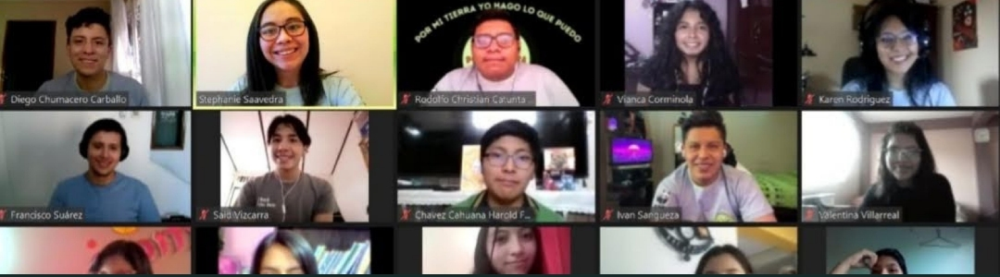
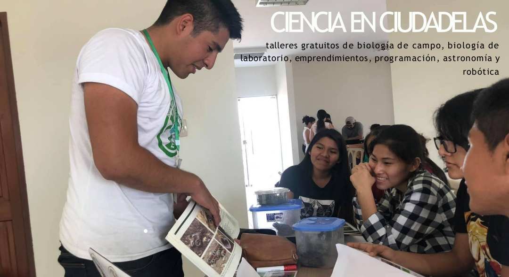
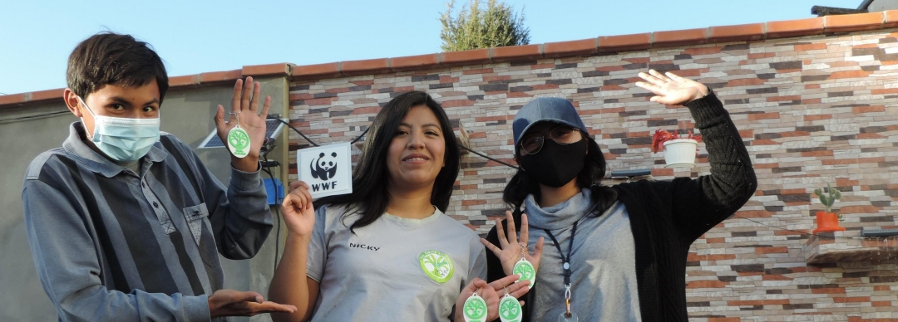
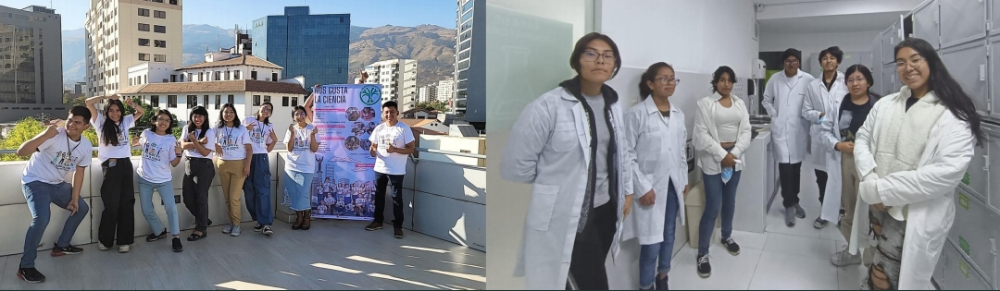
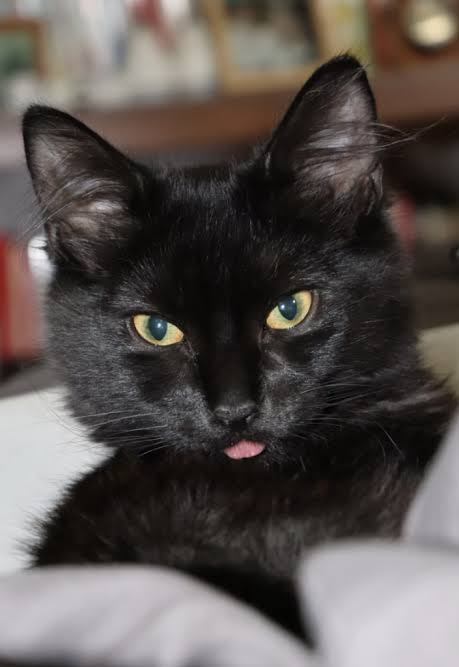

Historia y Trayectoria del Programa
¿Cómo nace?
Somos un programa de divulgación científica que trabaja para incentivar la curiosidad investigativa de jóvenes estudiantes, mediante la motivación en seguir áreas STEM (Ciencia, tecnología, ingeniería y matemáticas), promoviendo la elección de carreras científicas.
¿Qué nos brinda?
BIBLIOTECAS MUNICIPALES
-teatro científico, experimentos y creacion de proyectos en base a lo aprendido. El proyecto tiene duración de 3 dias.
-Los talleres estan direccionados a estudiantes de la pre promo y promoción.
VIRTUAL NIVEL NACIONAL
3 versiones consecutivas durante la pandemia
Con invitados nacionales e internacionales como jurados dentro de los proyectos finales de nuestros estudiantes.
Duración: 2 semanas intensivas


Proyectos
- Ciencia en las ciudadelas
- Ciencia en casa
- De la Impresión a la imaginación 3D
- Chicas al Codigo
- RECIBOT


¿Dónde nos encontramos?
[Indica la ubicación física, ciudad, dirección exacta o sedes institucionales...]

¿Quiénes nos apoyan?
UNICEF: Para cada infancia

FUNDACIÓN PATIÑO

CBA: Centro Boliviano Americano
COCHABAMBA

LA PAZ

SANTA CRUZ

TARIJA

Con la subvención de:
FONDO DE MUJERES APTHAPI JOPUETI